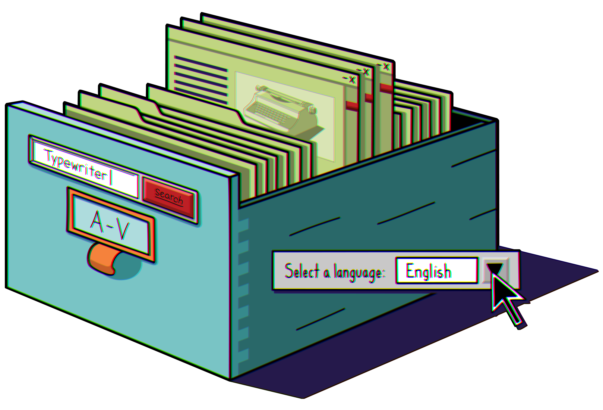

Subscribe to the podcast to receive new episodes as soon as we release them

The web was growing quickly in the ‘90s. But all that growth wasn’t going to lead to much if people couldn’t actually find any web sites. In 1995, an innovative new tool started crawling the web. And the search engine it fed opened the doors to the World Wide Web.
Elizabeth Van Couvering describes trying to find websites before search engines, and how difficult it was becoming in the early ’90s to keep track of them all. Louis Monier talks about having to convince others how important search engines would become—and he showed them what a web crawler could do. Paul Cormier recounts taking the search engine from a research project to a commercial one. And Richard Seltzer wrote the book on search engines, helping the rest of the world see what a profoundly vital tool they would become.
00:00 - Saron Yitbarek
It's the winter of 1995. You're an early adopter cruising the internet for all the latest details on, I don't know, Pixar's new movie Toy Story, or maybe NASA's Galileo Space Probe. The world wide web is your oyster because a brand new tech has arrived that lets you search for anything online. It's unlike anything that came before. There's a flood of information at your fingertips, and now you can navigate it with total ease. This website for searching other websites is going to change the world. It's got a weird name, but who cares? You type it in and smile: altavista.com.
00:50 - Saron Yitbarek
All season we've been looking into the tech breakthroughs that made 1995 one of the most extraordinary years on record. It was the year the dot-com bubble began and 16 million internet users suddenly showed up. With their arrival came a flood of new content, and with that flood came a pressing new need, the need for navigation.
01:15 - Saron Yitbarek
How do you follow every thread in a world wide web? How do you find that crucial piece of information you've been hunting for? At each point in history, we've had to invent new ways to organize our data. The more data we got, the more creative we had to get. In ancient times, we invented alphabetical order, indexes, and tables of contents so we could find what we needed in books. More modern inventions, like the Dewey Decimal System organized huge libraries of knowledge. But digging through something as giant as the world wide web required an invention more powerful than anything that had come before. And 1995 was the year that invention arrived.
02:04 - Saron Yitbarek
I'm Saron Yitbarek and this is Command Line Heroes, an original podcast from Red Hat. As of the year 2020, there were close to 5 billion internet users on the planet. 5 billion people, posting content, tagging themselves, streaming videos, writing posts, and researching term papers. To get it all done they searched through more than 4 billion web pages. That's a lot of content. For perspective the New York Public Library system has just 55 million items. Our ability to sort through all that content isn't just convenient, it's fundamental. Without a way to search the web, the web as we know it would not work. In fact, before 1995, there really wasn't a good way to search.
02:55 - Elizabeth Van Couvering
And I actually even have a book that I used to write down websites in so that I could help people at the cyber cafe find things that they wanted.
03:06 - Saron Yitbarek
Elizabeth Van Couvering is an Assistant Professor in Media and Communications at the University of Karlstad. She's been studying the history of search engines for about as long as they've been around. And she describes the early web as a flat and static place with a bunch of directories to help you find your way. The first directory was made in 1991 by Tim Berners-Lee himself. He called it the Virtual Library. Sounds impressive, but it was honestly just a list of sites. New websites were sent to Berners-Lee and he posts links on his library page, organizing them into categories like Anthropology and Bio Sciences. He was getting, at most, a hundred visits a day. But early web directories like that? They were updated manually.
03:54 - Elizabeth Van Couvering
In Yahoo's early state, there were editors who kept a list.
04:01 - Saron Yitbarek
There was also InfoSeek where webmasters manually submitted their pages for inclusion. But web search, as we know it, hasn't yet evolved.
04:10 - Elizabeth Van Couvering
It soon became apparent that the work was not very possible actually. It simply wasn't possible to do it on a human scale because you just needed too many people and there still was no funding.
04:27 - Saron Yitbarek
Van Couvering's point about funding is an important one. In the early days, most people didn't understand what search was going to become, so there wasn't much money behind the idea. The internet was a niche, not quite a global phenomenon. And the idea you could get enough traffic at a search site to make money through ads, which maybe seems obvious today, was not so obvious back then. That early site InfoSeek, for example, tried a subscription model selling access to their list of websites for 10 bucks a month, and you were limited to 100 searches each month.
05:05 - Elizabeth Van Couvering
These companies we're searching all the time for what was going to be the business model.
05:13 - Saron Yitbarek
That problem, finding the right business model for search, was going to take a long time to solve. We'll get back to it later. But in the meantime, there was another problem. How do you get a technology that's useful enough? That's good enough to actually sell?
05:29 - Louis Monier
Too much demand and not enough supply.
05:31 - Saron Yitbarek
That's Louis Monier. A true web pioneer. He told us how back in the early 90s, only a tiny fraction of the internet was indexed by anybody. On top of that, nobody had a handle on how fast this thing was growing. Partly, it was a hardware problem. Machines were underperforming and people were getting timeout responses when they tried to search.
05:54 - Louis Monier
As a user of the early internet, I was frustrated with what was available.
05:58 - Saron Yitbarek
At the time, Monier worked in a research lab at Digital Equipment Corporation, better known as DEC, along with computer scientists, Paul Flaherty and Michael Burrows. The team had seen the Mosaic browser, which arrived in 1994. They'd seen the easiness of Mosaic, its usability, and it inspired them to start thinking about other tools that could make the web more usable. A search tool was front of mind. It was not, though, front of mind for all their bosses at DEC.
06:30 - Louis Monier
The management was sort of confused for a while, because this didn't look like anything they knew. So there were a few people who were sufficiently interested in change that they understood what it was, and they took the bet that this was actually going to turn big, but most people were just really confused. What is it? How are you going to sell it? Who's going to use it? Why do people care?
07:00 - Saron Yitbarek
One of the DEC folks who did believe that search was worth pursuing with a DEC product engineer named Paul Cormier. His job was to help promote the new creations that came out of their research labs.
07:14 - Paul Cormier
Digital was looking for ways to commercialize some of their more interesting research technologies, and so way back then, they started an organization to look at trying to productize some of these interesting research projects—so actually embedding product engineers into the research groups, to try to look at promising ones that we would bring to market, and I was the first one that started that group.
07:42 - Saron Yitbarek
At the time, DEC was the second-largest computer company in the world, after IBM. And like IBM, they prided themselves on funding their own research. They had 4 major labs, like the one where Monier worked.
07:57 - Paul Cormier
Digital had a huge research organization. The researchers could really do anything that they thought was interesting with what their background was, and so the researchers in Palo Alto started “search” because it was just interesting at the time.
08:17 - Saron Yitbarek
Search was interesting because it hadn't yet been done in a big enough way. And the team at DEC came to realize they had a chance to deliver something new, a first real search engine for everyday users. They called it AltaVista.
08:31 - Louis Monier
I remember being, like, in the spring of 95, just laying on a mattress by the pool and taking notes about how we design something to do that. And then by the 4th of July 1995, I was starting to crawl the internet.
08:57 - Saron Yitbarek
Did you catch that term Monier used? Crawl the internet? A web crawler—or a spider they’re sometimes called—is a program that crawls over the web and indexes everything it finds. You start on, say, the Yahoo homepage. Your program analyzes what's there, finds all the links, and then follows those links. On the new web page, you repeat. From link to link, you crawl the whole world wide web, or that's the idea. Trouble is, all the crawlers back in 1995 couldn't keep up with how fast the web was expanding.
09:34 - Louis Monier
Most web crawlers were what's called single fed, meaning they were doing things one after the other. So fetch a web page, analyze the links, note those links somewhere, pick the next link, fetch that page, keep going.
09:51 - Saron Yitbarek
But if you're crawling to one link at a time, you can only do maybe 20,000 sites in a day. So when Monier built his crawler, it wasn't going to be single-threaded.
10:02 - Louis Monier
I wrote a web crawler that didn't do one thing at a time, it did literally 1000 things at a time. It had a thousand threads. So think of them as little programs that work next to each other independently, and each would fetch a page and then go to sleep, and let someone else use the computer while waiting for the answer, and that worked really well. So it was basically working a thousand times faster than other web crawlers.
10:31 - Saron Yitbarek
That crawler, which they called Scooter, was one of several advances built into AltaVista. It was the first search engine to index the entire text of each web page—the first to allow searches of images, audio and video.
10:48 - Saron Yitbarek
Two years after launch, it even had a translation feature called Babel Fish, which massively increased the number of pages you could make sense of. All these features were being utilized to hunt through hundreds of millions of pages. And thanks to DEC's line of alpha 64-bit microprocessors, AltaVista could work at speeds that made searching feel as easy as thinking.
11:15 - Louis Monier
So it would spawn in a fraction of a second, which people had just never experienced.
11:19 - Saron Yitbarek
By the fall of 1995, Monier had released an internal version of the search engine to the staff at DEC. And they seemed to like it.
11:28 - Louis Monier
I had no idea how much people were starting to rely on it until one night I turn off the machine in order to, I don't know, reload a new version or something like this, and my inbox just explodes with messages of people saying "Turn it back on. I can’t do without this."
11:44 - Saron Yitbarek
Louis Monier's team had taken the idea of search, and turned it into something indispensable. Next, AltaVista became available to the public in December of 1995. And within a couple of years, there were 80 million users.
12:01 - Louis Monier
AltaVista probably accelerated development of modern search engines by a few years. It was sort of worldwide. Everybody was using AltaVista. So I guess that's the thing I'm the most proud of, by pushing the envelope a lot, not a little bit.
12:19 - Saron Yitbarek
Richard Seltzer is a novelist these days, but he worked at DEC for 19 years. When AltaVista was first released, it was Seltzer they called on to write a book, explaining the value of search.
12:31 - Richard Seltzer
Part of the fun I had in writing the book and in making speeches about everything was pointing out to people that the capabilities they had in their hands and they had no idea that it was there.
12:42 - Saron Yitbarek
His book was called the AltaVista Search Revolution and it was a revolution they were talking about. While researching his book, Seltzer began to see something profound in what Monier had done. The switch from old databases to jet-fueled indexes was a game changer.
13:02 - Richard Seltzer
Before AltaVista came along, if you wanted to find something, you had to categorize it and put it neatly into a database before you'd ever be able to get anything out. The problem with databases was databases being based on categories, and categories being based on what you know of the world today and how you think of the world today. But the problem is the world doesn't stay still.
13:31 - Saron Yitbarek
The older database approach only worked if you knew how things were organized in the first place, but the index approach allowed the automated retrieval of whatever you wanted, and that meant everything was yours to discover.
13:47 - Richard Seltzer
It was being able to find the needle in the haystack without touching the haystack.
13:51 - Saron Yitbarek
Seltzer's book opened a door for people revealing, not just the power of search, but the flip side of that coin, the power of search engine optimization. Of course they didn't have that term yet. He called it-
14:06 - Richard Seltzer
Fly paper.
14:08 - Saron Yitbarek
See what he did there? Because flies get caught in webs, but sticky fly paper catches even more flies. Okay maybe SEO is better, but Seltzer deserves credit for seeing that search was going to be about more than just ordinary users. It would be about businesses, too.
14:25 - Richard Seltzer
Sometimes the best way to find that unique person or set of people out there isn't to search for them but rather just set up web pages that lead to them finding you through their searches.
14:40 - Saron Yitbarek
Not everybody at DEC saw that search had a business angle. In fact, they didn't know what they had. They didn't quite get it.
14:48 - Louis Monier
At heart, it was a hardware company with an image of technology that was rooted in the past.
14:57 - Saron Yitbarek
And that meant, amazing as AltaVista was, it never had a long horizon. Being a leader in the field doesn't mean much if you don't know what you're selling.
15:07 - Louis Monier
So there was no more interest in this, and we sort of ran out of steam, and that literally is when Google started.
15:21 - Saron Yitbarek
Elizabeth Van Couvering told us a series of business failures caused AltaVista to sink after a few years at the top of the search pack. First and foremost, they failed to monetize while others were not so shy.
15:36 - Elizabeth Van Couvering
In about 1996, Yahoo began to take advertising and everything became different. People really, really, really needed a funding model.
15:51 - Saron Yitbarek
By this point, Yahoo had outgrown their old directory days. They were indexing the web, just like AltaVista, and they found a way to make money at it, too.
16:02 - Saron Yitbarek
Then in 1997, a series of mergers took place. Big players came to realize that search was the future. Some of the biggest companies in media were swallowing up the search startups. Disney, for example, bought InfoSeek. And who bought AltaVista? Well, their parent company DEC was bought by the computer company Compaq.
16:48 - Saron Yitbarek
Sadly Compaq didn't understand what they'd bought.
16:52 - Elizabeth Van Couvering
The thing that business people at that time understood about searches that it got people to one place. And then they did not understand that search is a transit point. So they wanted to keep everybody in the search engine so they could show them ads in the search engine.
17:12 - Saron Yitbarek
What Van Couvering is describing is the web portal model that Yahoo and AltaVista both tried out. The vision, a failed vision as it turned out, was to build a walled garden, a complex homepage, a place that attracted people and held on to them so advertisers could display their wares.
17:31 - Elizabeth Van Couvering
That's not a business model that works for search engines. Search engines need people to come and go, right? A search engine to be good has to cover the whole web, not just the part of the web where you can show advertisements.
17:47 - Saron Yitbarek
And so Compaq had signed AltaVista's death warrant.
17:51 - Elizabeth Van Couvering
They didn't have any idea how to make this into a real venture, and they didn't want to invest in it. And the clever engineers, the research people of DEC couldn't help them understand, because they also didn't know the business model. But, there wasn't any more research funding coming because Compaq, unlike DEC, was not a research-focused company.
18:16 - Saron Yitbarek
At this point in the late 90s, nobody knew for sure how search was going to be monetized. Marketing teams, for example, we're looking to tweak results for their clients.
18:27 - Elizabeth Van Couvering
They were poking at AltaVista, and they were poking at Lycos and they were poking at InfoSeek. We now had pressures to potentially make some people look good on results, or how can we give people what they want, or should we sell links? And there was a pressure to include paid for links in the index, and it became a very conflicted space.
18:50 - Saron Yitbarek
Van Couvering's research suggests that the tech of AltaVista was perfectly positioned to succeed, but the executives in charge were not.
18:59 - Elizabeth Van Couvering
AltaVista had a technically superior search engine, but they did not manage it correctly for the time.
19:11 - Saron Yitbarek
In other words, while there was more and more interest in search, the field was anybody's for the taking. AltaVista could have made a comeback, but that opening was about to snap shut.
19:25 - Saron Yitbarek
When Larry Page and Sergey Brin founded Google in 1998, they weren't thinking about what the marketing department wanted or how they could support a hardware team. They were thinking about the way academics organize their information. Citation analysis. A way to see which material is more cited, more relevant. And they built that approach into their page rank algorithm.
19:49 - Elizabeth Van Couvering
What Brin and Page did was to take that kind of logic and say, "Okay, we are going to look at not just the content of the page." AltaVista and the other search engines up to that time had looked at what was on the page. What was the title of the page? What were the words on the page? But Google looked at the link structure behind the page and identified certain websites as hubs of knowledge.
20:24 - Saron Yitbarek
The indexing was still organic and free in one sense, but it also tracked the value of different pages. It ranked them. This brought an elegance to search, and a usefulness that it never had before.
20:39 - Saron Yitbarek
And Google brought something else, too. Dollar signs. Page rank aside, Cormier reminded us that Google cracked the funding problem AltaVista and the rest never quite figured out.
20:52 - Paul Cormier
Finding the business model, the advertising-based business model, was the thing that made it explode. And as people used it more for free, you needed more everything, more R & D, more systems, more software, more datacenters, everything. And so I think once the advertising model that Google brilliantly put in place, that's really what it took for it to really become what it is today, because it's a huge capital investment and somehow you have to pay for it. It's really easy to say now what a dumb mistake to not come up with an advertising model, but when it's never been done before, it's different, right?
21:35 - Saron Yitbarek
There was a moment that you'll remember, if you're old enough. That moment in the early 2000s, when somebody said, "Hey, you're using the wrong search engine," and then they pointed you toward Google. Converts raced to the new king of search and soon enough it became literally synonymous with search. You didn't just search anymore, you Googled. Nobody was AltaVistaing. Those early years of competition faded into memory. Here's Van Couvering one more time.
22:39 - Saron Yitbarek
Search was always going to be so much more than a side project. So much more than a curiosity in a computer company's research lab. And after Google, we all understood that. In a massively connected world flooded with content, search is what everybody's looking for.
23:04 - Saron Yitbarek
In 2010, Google instant arrived and the search engine started predicting what you were searching for before you finished typing. Advances in AI continue to make the experience more and more intuitive. And it's really become impossible to imagine online life without these tools. But the fundamentals of today's search technology were there in AltaVista. They were imagined into being back in 1995 by pioneers like Louie Monier. He understood that no simple catalog could ever keep up with our sprawling curiosity.
23:46 - Saron Yitbarek
We probably used search engines a few hundred times just while putting this episode together. Just today, I wanted to check up on our guests and in a second, I see Louis Monier just did an interview where they call him the “father of search.” And Larry Page's net worth is, I'm not even going to tell you. And Paul Cormier is, all right, he's the CEO of Red Hat, the company that brings you this podcast.
24:18 - Saron Yitbarek
Want to learn more about the history of search engines? There's a stack of bonus material waiting for you over at redhat.com/commandlineheroes.
24:29 - Saron Yitbarek
Next time, we are going global traveling to France, Argentina, and China, to discover how different countries build their own on-ramps to the internet. Until then, I'm Saron Yitbarek and this is Command Line Heroes, an original podcast from Red Hat. Keep on coding.
More from the episode...
About the art
Navigating the early internet was a real challenge. Without an index, directory, table of contents, or treasure map, users could only find the websites to which they already had the URL. Browsing and exploration were limited, to say the least. Web crawlers and search engines became the library card catalogs of the world wide web, opening it up for users to find more content. These tools charted the vast wilderness of the internet for all to explore.
Kendall 'Boo Boo' Howse
Senior Designer, Red Hat
Further Reading
Each episode is based on a lot of research. Here are just a few of the resources we used to learn about search engines:
A Eulogy For AltaVista, The Google Of Its Time by Danny Sullivan
AltaVista Search Engine History Lesson For Internet Nerds by Claire Broadley
Remembering – AltaVista by David Hayward
Short History of Early Search Engines
by Mark Knowles
The End User: The power of Babel - Technology - International Herald Tribune by Victoria Shannon
Get the newsletter
After each episode drops, we send commentary from the Command Line Heroes team, as well as links that help you take a closer look at the topics we cover. It’s as simple as that.
Presented by Red Hat
For 25 years, Red Hat has been bringing open source technologies to the enterprise. From the operating system to containers, we believe in building better technology together–and celebrating the unsung heroes who are remaking our world from the command line up.